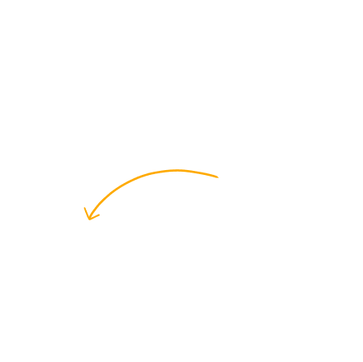
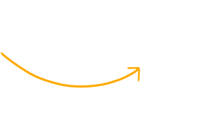

Когда всё вроденормально, но выбольше не команда
К чему приводит эмоциональное
выгорание в отношениях
Ещё не знают, что через пять лет
от их счастья почти ничего
не
останется

Кто в главных
ролях?
На первый взгляд — обычная пара:
работа, быт и вечное
«поговорим потом»
Это Ирина, и её уже
всё достало
Ей надоело напоминать о домашних делах, выпрашивать внимание и
первой идти мириться. Иногда кажется, что отношения нужны только
ей

Это Костя. И он не понимает,
что опять не так
Он приходит с работы и хочет отдохнуть, но дома снова претензии.
Поэтому всё чаще выбирает телефон и молчание вместо очередного
выяснения отношений
Выгореть в отношениях — это испытывать эмоциональную и физическую
усталость
из-за постоянного стресса
Как выгорают
отношения?
Отношения редко
рушатся за один день
-
Эмоциональное
выгорание
Становится сложнее говорить о чувствах и просить помощи
-
Потеря
близости
Меньше разговоров, прикосновений, близости, совместных впечатлений
-
Одиночество вдвоём
Формально вы вместе, но эмоционально каждый существует отдельно
-
Перегруз
Из-за накопившегося стресса уже не получается вести разговор без
ссоры
Вз-р-ы-ы-ы-в
Казалось бы, что всёэто конец отношенийно-о…можно ли что-тоизменить?
Прежде чем пытаться что-то исправить, важно научиться говорить друг
с другом. Не спорить, кто прав, не искать виноватого, а попробовать
услышать, что чувствует каждый.
Безопасный разговор — это тот, в котором можно честно рассказать о
своих переживаниях, не опасаясь, что твои слова обернутся против
тебя
Иногда первый разговор нужен не для того, чтобы всё исправить, а чтобы
наконец понять друг друга
Не обязательно знать,как всё исправить.Иногда достаточнопонять, с чего начинать